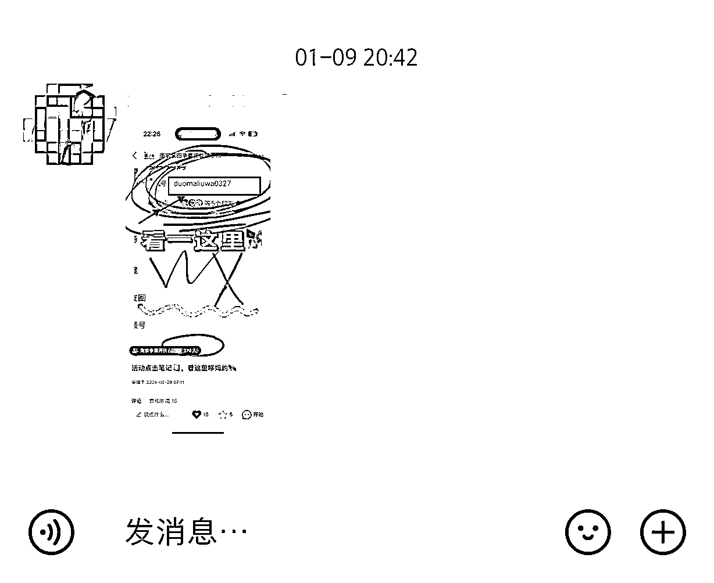
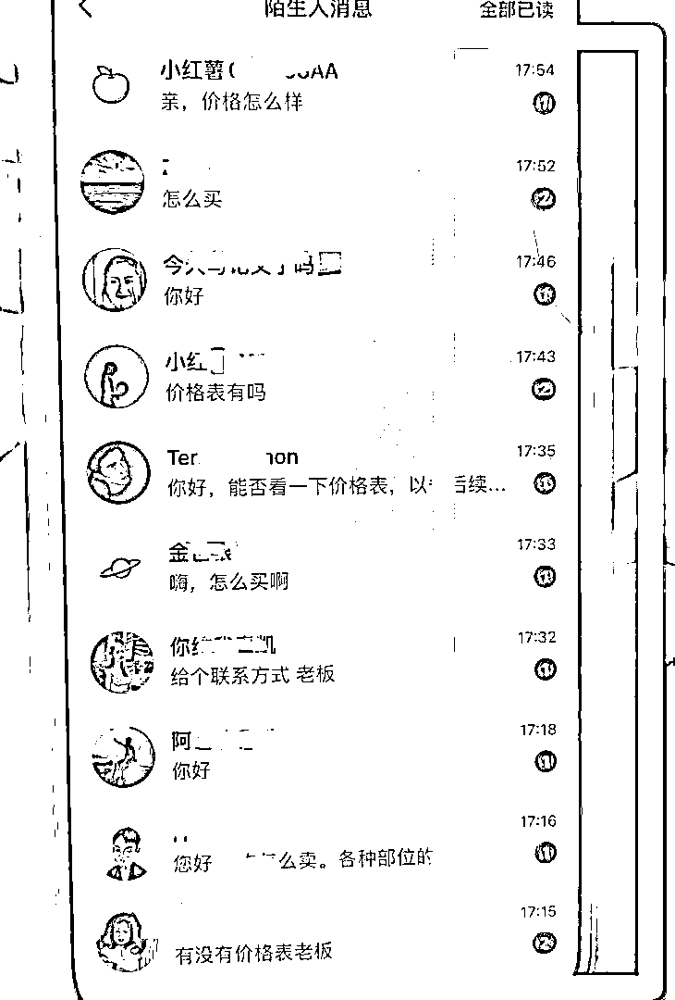

来源：https://cdmxxedltu.feishu.cn/docx/EdNldYoRDoNtSbxMkIoc90pEnVg
大家好，我是做小红书的蓝子鱼，我从22年开始参加第一期小红书航海，系统接触小红书，现在一直坚持在做小红书。
最早做小红书的时候，教育类两个月涨30万粉，到现在起号一个月只能涨1万粉，明显感觉到小红书竞争越来越激烈，流量越来越贵，平台规则越来越严格。
24年开始也通过小红书引流同城本地客户，做的几个项目都是小红书引流，线下做交付，发现比做纯线上好做太多了。
我帮自己家人做了一个同城账号，是一家潮汕牛肉火锅打包店，肉都是店里切好打包，客人带回家去吃，没有堂食，今年年初做小红书，比去年营业额增加20万，最多的一个客户一年消费八千多。
为什么小红书同城能够效果比较好，我觉得主要有以下四个原因：
1、小红书的制作成本比较低，普通人也能够上手，不像抖音，视频号都要拍视频，而且内容越来越精细化，越来越卷，制作门槛低才能做到可持续，可以复制。
2、运营存在信息差，用一线城市的玩法，到二三线城市都是降维打击，二三线城市的人，这一两年才开始大量使用小红书，很多商家也还没做小红书。
3、用户习惯用小红书搜索，现在越来越多的人开始用小红书找吃喝玩乐，只要能够有一些相关的关键词被用户搜索到，就能够获取到精准大量流量。
4、用户的质量比较高，这些人购买欲望比较强烈，在笔记里面详细介绍产品，评论区基本上都是直接问怎么买？在哪里？
这篇帖子主要是给大家分享一些我做小红书本地同城的经验，以及踩过的坑。
家人开的是一家潮汕牛肉打包站，就是每天早上从屠宰场进肉过来，然后客户要买肉的时候，再现切打包。
这种店就是比较传统的社区生鲜店，因为远一点的人根本不知道这个店，厦门许多小区底下都开了这种店，大部分是我们县城的人过来开的，竞争也很激烈。
社区店的劣势挺多的，尤其是这种没有形成规模的单店，客户90%的周围几个小区的，刚开始开业的时候，周围的人很喜欢吃，有的天天买，到周周买，到一个月才吃一次，就会导致生意越来越差。
只要一直有新客户到店，老客户复购，生意才能越来越好，小红书就能覆盖的全厦门的客户，附近的客户直接到店购买，远一点的我们可以叫达达或者滴滴配送。
今年年初的时候，我就开始给店里做小红书，潮汕牛肉在厦门还是很多人吃的，搜索小红书只看到一家，而且内容质量非常差，去看了广东其他城市，笔记质量也一般，但是评论区非常多，我看完觉得这个内容好简单，稍微优化一下效果就很明显。
养号在很多小红书帖子都有写，用厅卡注册，每天早中晚各刷15分钟，用流量等等
如果是注册很久的老号，但是没有发过笔记的可以直接用，如果是之前发其他类型的，建议注销重新注册。
尽量不要一个号登录多个账号，用切换登录，个人感觉过一段时间以后，流量就会变得很差。
②账号搭建：
账号搭建非常重要，因为用户进来会通过你的主页来了解你，认真做好主页搭建，可以增加用户的信任感
昵称：最好是跟品类，地区相关的。
比如：
厦门➕店名➕品类
头像：可以放门头照，也可以放老板和产品的合影。
简介：要介绍自己的经验和优势，增加信任感，很多人都是写的很随意，比如下面这个：
建议：要写清楚自己的身份，行业经验，产品优势，门店所在位置。
举例：
我是一位土生土长的潮汕人
专注从事新鲜牛肉已经超过10年
为了保证品质，肉都是当天现到现切
店是在……
做小红书最重要的第一步就是找对标账号，找到同行做的比较好的内容，直接对标就会有比较好的效果。
同城获客的内容，相对比纯线上成交更加好做，大部分商家的内容都是非常的土。
比如我去小红书找对标的账号：
1️⃣看到上面这些笔记，我会一篇一篇的点进去看，首先会看评论区，评论区咨询比较多的，这种笔记才是比较优质的，意味着客户有真实需求。
2️⃣选择优秀的笔记，开始拆解内容，从吸睛封面，爆款标题，文案结构。
小红书和抖音最大的区别，就是抖音是系统推荐，你不喜欢再划走，小红书是双瀑布流，用户对内容感兴趣才会点击进去，所以笔记封面和标题非常重要。
同城引流的好处，就是可以直接拍摄产品，但是小红书的封面，一定要拍的好看，小红书的女生审美非常高，拍照的时候光线非常重要，还有苹果手机拍出来的还更好看。
美食类的照片一定要吸引人，下面这种照片一看就给人不新鲜的感觉。
也收集了其他同城行业的封面首图，给大家感受一下，要让客户能够从封面就读取到信息。
服装类型：选几套爆款搭配，然后选择光线好一点，色调偏暖。
同城活动：同城活动是目前比较火的引流方式，可以通过线上获客，线下沙龙成交，直接把活动照片拼图。
美食商家：美食类主要是要把美食拍的比较诱人，看起来更有食欲。
笔记标题：
我一直觉得标题是最容易的，找一些同类型，或者是探店的账号，标题都写的非常吸引人，关键词改成自己领域的就行，而且可以重复用。
文案内容：
同城小红书文案就是用来做成交的，把客户的疑问点提前讲清楚，相当于一篇销售信，客户看完觉得产品不错，也没有疑虑了，那就直接问价格，或者是哪里购买。
牛肉打包这个行业很多都没有写文案，我以自己做的牛肉打包店账号为例，写笔记之前首先要了解客户需求，购买潮汕火锅牛肉的客户，关注的点主要有：
1️⃣新鲜
2️⃣价格
3️⃣方便
突出新鲜文案：
（这家店的肉每天都是新鲜现杀的，早上屠宰场杀好再送过来，过来肉还是温的。
许多潮汕火锅店的肉，都是这个店里的老板批发出去的。
肉可以到店里让老板现切，品质都看得见，不会被以次充好，吃起来也放心。）
突出便宜文案：
（这家肉真的比火锅店便宜，火锅店一盘2两的钱，到店里能买半斤了。
我们两个人每次吃到撑，人均才50➕，真的比火锅店便宜太多了。）
突出方便文案：
（店里肉老板直接切好，打包回家就可以直接开吃，不用再去切肉和洗。
店里每天还有新鲜现熬的牛骨汤，真的香到迷糊，老板还免费赠送辣椒酱和沙茶酱，味道就和我去潮汕吃的一模一样。
如果不方便到店里买，还有让老板帮你叫达达或者滴滴过去，简直是懒人的福音。）
内容制作真的超级简单，只需要每天把打包的肉排开，放在桌子上拍照，然后把上面的这些段落排列组合，或者根据差不多意思，再写一遍，制作成本非常低，基本上十分钟做出一篇笔记
做其他类型账号也是一样的，把客户的需求点罗列出来，然后把问题写出来，就形成了一篇小红书引流获客文案，目前已经测试了十几个行业，效果都非常好。
增加被搜索曝光率
同城类型的账号，不一定每个领域都能有很大曝光量，有些类型只能是靠一些搜索流量，比如我做过桶装水配送，这个类目基本上只有当客户有需求，才会去搜索，所以增加被搜索概率就很重要。
能被搜索到，首先一定是账号没有违规限流，然后就是单篇笔记的点赞数，账号发布笔记数量，还有就是内容里面的关键词，
1️⃣账号昵称
2️⃣笔记标题
3️⃣内容文案
4️⃣蓝色标签
5️⃣门店地址
6️⃣评论区
按照上面的内容，基本上新手写过几篇以后，也都能独自完成小红书同城获客笔记的创做，至少比90%的同行都做的好。
引流私域官方管的是越来越严，现在基本上账号只要流量好了，就会被官方特别照顾，我有一个号三天千粉，发了几次微信，直接被永久限制流量推荐。
生财里面的帖子也有专门讲引流的，方法有十几种，但是我只能说只要流量好的账号，不开聚光，引流就没有百分百安全，要做好随时被限流的心理准备。
下面我主要是分享同城项目，特定的一些引流方法。
1、发布笔记带地址：
如果是有实体店或者是实际经营地址的，一定要去地图上认领自己的门店地址，然后发布的时候一定要带上门店地址，这样用户能够通过地址导航到店，还有用户搜索相关笔记的时候，会优先推荐附近的店铺。
地址旁边还会有手机号，很多客户使用美团和大众点评习惯了，会通过这个地方打电话过来，打电话过来就可以引导加微信。
2、店铺门头带手机号
目前店铺门头带手机号的图片，可以放在小红书做头像，也可以把这个图片当成笔记发布出去，不会容易违规，测试过可以存在很久。
3、粉丝群
可以创建粉丝群，把意向用户吸引进粉丝群里面，然后拿小号在里面发带有微信的图片或者表情包。
群里发微信引流：

或者是把群昵称改成微信号，然后群头像改成微信图标。
4、账号瞬间
可以用手写的微信号，然后做成打卡瞬间，这个目前有概率会被检测到，但是相对还是比较安全，是微信全部写在一个瞬间里面。
之前一直做线上获客，发现纯线上的项目，成交率比较低，而且是跟全国的正规军在竞争，而实体商家连图都拍不好，更别说文案了。
小红书同城获客，只要把图片素材拍好一点，加上固定模板，坚持发个一个月都能有比较好的成果。
同城的成交率很高，客户可以到店，或者知道店地址，或者是到家服务类型的，也是见面以后成交率就高很多，大部分行业加微信成交率，基本上都能到50%以上。
目前小红书的算法推同城还是很精准的，记得带上所在的城市，需要到店的类型，外地客户也很难成交，下面是我们账号的人员分布。
客户都非常爽快，看完笔记都是直接评论区或者私信问价格和购买方式。
现在线下实体如何没有做线上获客，新店基本上很难生存下去，有同行看我们生意好，直接开对面，三个月就关门了，身边的朋友也有开两三个月倒闭的。
而我们通过做小红书，整体情况还是比较好，甚至周末和节假日，下午五点就已经没肉了，因为很多私域用户会提前预定，目前通过小红书引流了2000人，笔记爆的时候，后台都回不过来。

后面这个账号跑通以后，就给店里的人去运营，中间出现过两次违规引流，被限流了两周，主要是用户咨询直接发微信，被检测出来的，限流结束还是有流量，现在即使不发笔记，每天也会有五六个咨询，这个号一年才发20多篇笔记。
因为目前门店生意还可以，经常没有肉，所以没有去继续放大，也没有投放聚光，如果是可以形成规模的行业，可以借助聚光进行放大，加上矩阵获客。
后面陆续实操了其他的项目，发现同城的流量真的好做很多，而且客单价还能拉的比较高，也能延伸出来很多新的利润点。
现在很多美业门店，服装门店都把店开在写字楼里面，因为临街店面贵，而且也基本上没有流量，全靠线上获客。
如果自己有门店，或者是有产品，有针对同城用户的服务，一定要去做小红书，很多城市的很多类目基本上是空白，只做线下的实体真的是非常困难。
小红书本地同城，也会延伸出来很多新的商业机会，比如帮助商家运营小红书，或者是自己选一个赛道进行深耕，也欢迎大家一起交流探讨。